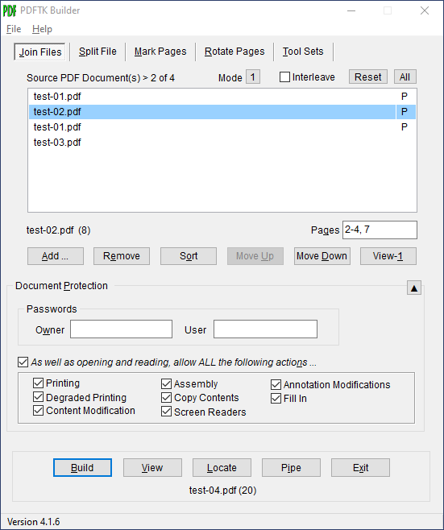
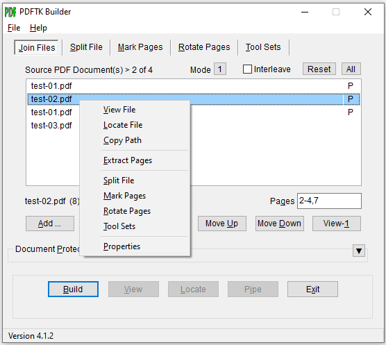
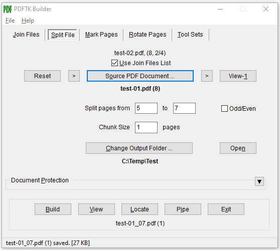
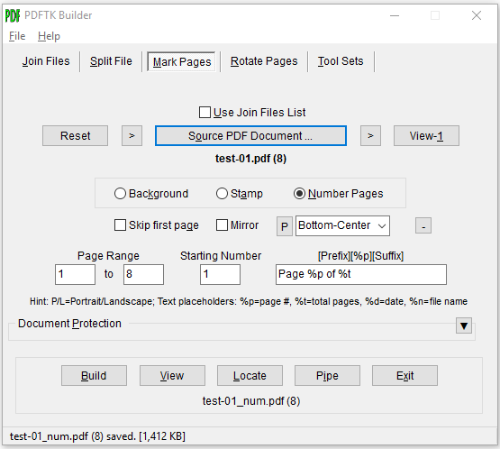
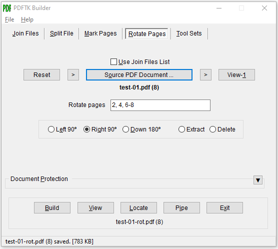
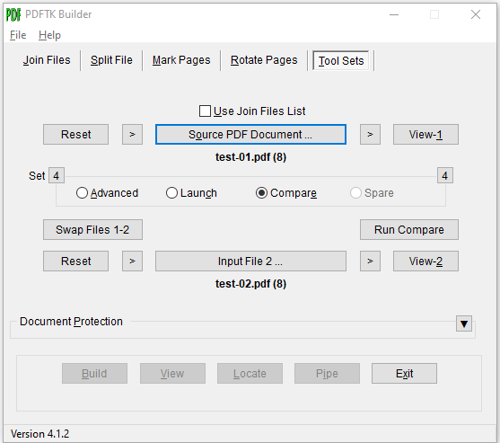

PDFTK Builder Enhanced
Version: 4.1.6
Date: 28 May 2021
Platform: Windows 32-bit application
Compiler: Delphi 10.2
Authors: David King (4.0.0-4.1.6), Angus Johnson (2.3.1-3.10.0)
Copyright © 2017-2021, David King; © 2005-2018, Angus Johnson
License: GNU General Public License (GPL), version 3
Dependencies: PDFtk Server v2.02; installed PDF viewer
PDFTK Builder is a free, graphical user interface (GUI) for the Windows version of the popular PDF ToolKit (PDFtk) command line tool, PDFtk Server by Sid Steward.
This project modifies Version 3 of PDFTK Builder by Angus Johnson to: (1) enhance the user interface, (2) add PDF operations and options and (3) update the program to be compatible with later versions of PDFtk (v2.02 supplied). It assumes that a PDF viewer is already installed for displaying .pdf files.
The following screenshot shows the updated main form of PDFTK Builder with the 'Join Files' tab sheet active. The form consists of: (1) an input section on five tab sheets for performing various operations with PDFtk, (2) a 'Document Protection' panel which can be toggled open/closed and is used for setting passwords and permissions to be applied to output PDF files, and (3) an output section with buttons to build and access the resulting PDF file and to exit the program. A menu and status bar are also located at the top and bottom of the form. In a typical use case, the user will select the source PDF file(s) and specify page ranges, modify (if needed) security settings to be applied to the output file(s), and then press the 'Build' button to generate the output PDF document(s) or text report.

'Join Files' Tab with Doc Protection Panel open
Buttons and other controls on the form can be accessed by clicking on them with a mouse or by entering the applicable shortcut key, Alt-X, where X is the underlined letter in the caption of the control. (Note: The 'Alt' is actually optional as long as a control expecting text to be entered, such as an edit box, does not have the focus.)
----------------------------------------------------------------------------------------------------------------------------------
TAB SHEETS
Join Files - Use ‘Join Files’ (Alt-J) to combine pages from multiple PDF documents or to rearrange, duplicate, delete or extract pages of a single document. The default method for joining files uses the PDFtk 'cat' (catenate) command to collate the pages from the input files in the order they are listed in the 'Source PDF Documents' window. An optional 'Interleave' method uses the PDftk 'shuffle' command to interleave the pages from separate PDF scans of the odd and even pages of a document.
Input PDF files can be added to the 'Source PDF Document(s)' list either via (1) 'Add' button (Alt-A) which pops up a Windows open file dialog or (2) drag and drop from Windows Explorer. Both methods support selection of multiple PDF files. Added files are always appended to the end of the source documents list. A copy of the selected files can be added by typing Alt-Shift-A. The order of files in the list can be changed via the Sort, Move Up (Alt-U) and Move Down (Alt-D) buttons. The selected file can be moved to the top or bottom of the list by typing Alt-Shift-U or -D.
Particular pages of a file are specified by selecting the file in the list and then entering page ranges in the 'Pages' box below the list. Page entries can take the form of a single page number or a range of pages consisting of the start and end page numbers separated by a hyphen. Multiple page selections can be entered by separating them by commas or semi-colons with or without spaces; e.g., 1,4-7; 9,11 - 20. Leaving the 'Pages' box blank keeps the default, all pages in their original order. When adding files to the list, the 'View-1" button (Alt-1) is useful for verifying that the file is the correct one and which specific pages need to be retained or modified (e.g., rotated or omitted). The selected file can also be viewed by double-clicking on the file in the source documents list.
A 'P' in the right column of the list indicates that specific pages (P) have been entered by the user. A 'T' indicates that the displayed file name has been truncated (T) from its center. When a PDF document is selected, its file name, page count (in parentheses) and the entered pages will be displayed on the line below the list. The 'Mode' button above the list will toggle the list between displaying (1) the file name only (default) or (2) the fully qualified file name, including drive and folder. The 'Reset" button clears the list; the adjacent 'All' button resets all tab sheets.
When the 'Build' button (Alt-B) is clicked, the pages of the merged document will be output in the order of the files in the source documents list and the pages selected within each file. Note that in the above example, the first file is listed twice because pages from the second file are being inserted between pages of the first file.

'Join Files' Context Menu with Doc Protection Panel closed
A selected source document can be forwarded from the 'Join Files' list to another tab sheet by typing the accelerator key for the destination tab sheet along with the Shift key; i.e., Alt-Shift-S, -M, -R or -T or by right-clicking and picking the desired function from the context menu. Other functions available from the context menu include extracting pages from the selected file and displaying its Windows file properties. These functions are available only while the 'Join Files' tab sheet is active.
| Menu Item |
Hot Keys |
Function of Context Menu Item |
| View File |
V |
Open/view the selected file in the assigned or default PDF application (same as View button) |
Locate File |
L |
Open the location/folder of the selected file in Windows Explorer with the file selected |
| Copy Path |
C |
Copies the full path of the selected file to the clipboard |
| Extract Pages |
E |
Save the pages listed in the Pages box for the selected document to a file |
| Split File |
S, Alt-Shift-S |
Switch to the Split File tab with the selected file as the source PDF document |
| Mark Pages |
M, Alt-Shift-M |
Switch to the Mark Pages tab with the selected file as the source PDF document |
| Rotate Pages |
R, Alt-Shift-R |
Switch to the Rotate Pages tab with the selected file as the source PDF documen |
| Tool Sets |
T, Alt-Shift-T |
Switch to the Tool Sets tab with the selected file as the source PDF document |
| Properties |
P |
Display the Windows file properties dialog for the selected file |
Split File - Use ‘Split File’ (Alt-S or Ctrl-S) to burst a single source PDF document into a separate (numbered) PDF file for each page. The default is to output all pages of the source document; however, a smaller page range may be specified by the user. The output folder for individual page files defaults to the same folder as the source PDF; however, clicking on the 'Change Output Folder ...' button will provide a dialog to select a different folder or subfolder. The resulting PDF files will have the name of the input file with a suffix, _nnnn, indicating the page number. Although selecting multiple pages will produce multiple output files, only the name, number of pages and size of the file for the last page will be displayed in the status bar at the bottom of the form. The 'Split File' function also has 'Odd/Even' checkbox for selecting an option for splitting the file into two files containing the odd and even numbered pages.

'Split File' Tab
The above screenshot shows the 'Split File' tab sheet with the 'Document Protection' panel closed. The screenshot also illustrates how checking the 'Use Join Files List' checkbox above the 'Source PDF Document ..' button allows documents to be taken sequentially from the Join Files list each time the 'Source PDF Document ..' button is clicked. Also shown are the '>' buttons on the right and left of the 'Source PDF Document ..' button which will copy the full path for the current source document to the Windows clipboard and from the clipboard to the 'Source PDF Document' field respectively, allowing file paths to be copied between tab sheets or directly from Windows Explorer (use Shift right click, Copy as path). These optional controls for selecting the source PDF file are also present on the 'Mark Pages', 'Rotate Pages', and 'Tool Sets' tab sheets. Individual source PDF files can also be selected via a drag and drop from Windows Explorer and where applicable, secondary input files (e.g., Stamp PDF File on 'Mark Pages' tab or Attachment File on 'Tool Set' tab) can also be dragged and dropped onto the form by holding down the Alt or Shift key while doing so.
Mark Pages - 'Mark Pages' (Alt-M or Ctrl-M) supports three functions: Stamp, Background and Number Pages. Stamp and Background overlay and underlay the pages of the source PDF document with a single page or multi-page stamp or background PDF, respectively. Number pages applies page numbers and/or text to the source document with options for page orientation (Portrait/Landscape) and number position (Top-Bottom/Left-Center-Right). If the '+/-' button next to the 'Number Pages' radio button will toggle the the display between the basic page numbering options and additional options for the page range, starting number, and prefix/suffix text as shown in the screnshot below. Settings for paper size and page number position are configured in the PdftkBuilder.ini file.

'Mark Pages' Tab with Number Pages (Extended Options) selected
Rotate Pages - Use ‘Rotate Pages’ (Alt-R or Ctrl-R) to rotate the specified page ranges in a single source PDF document by 90° right, 90° left or by 180°. Options are also available on the 'Rotate Pages' tab sheet to extract or delete the specified page ranges.

'Rotate Pages' Tab
Tool Sets - ‘Tool Sets’ (Alt-T or Ctrl-T) provides access to additional PDFtk operations and external PDF applications. There are currently 15 tools (plus one spare), arranged in four sets of four items each. Click on the left or right 'Set' number button to move forward or backward through tool sets 1-4.
| Set |
Tool/Function |
| 1 |
Dump Data - Lists (dumps) the metadata, page metrics and bookmarks of the source PDF document in a text dump file (_data.txt). The PDF file is not modified. The resulting .txt file can be edited and then used to modify the PDF data with the 'Update Info' tool. |
|
Update Info - Updates metadata and bookmarks of a PDF file with data from its corresponding updated _data.txt file.
|
|
Attach File - Attaches a single file to a PDF document. Repeat the process to attach additional files. |
|
Unpack Files - Copies attached files to a user-specified folder without removing attachments from the PDF document.
|
| 2 |
Decrypt - Decrypts a single encrypted source PDF file. Owner password must be supplied.
|
|
Repair - Takes a single corrupted source PDF file and a outputs new PDF file in filter mode, applying all output options and regenerating XREF table and streams in an attempt to repair the file. |
|
Uncompress - Removes PDF page stream compression (only useful if you want to view or modify PDF page code with a text editor). |
|
Compress - Restores normal PDF page stream compression (see Uncompress).
|
| 3 |
Dump Fields - Outputs the field specs (e.g., name, type) of PDF form to a _fields.txt file. |
|
Gen(erate) FDF - Writes values of fields of PDF form to Form Data Format text file (_fdf.txt). |
|
Fill Form - Updates the fields of source PDF form with values from its corresponding _fdf.txt file. |
|
Flatten - Merges fields and PDF form together so that fields can no longer be extracted or filled in.
|
| 4 |
Advanced - Allows editing and submission of a command to PDFtk. Provides access to the full range of PDFtk operations and options but requires knowledge of PDFtk command syntax.
|
|
Launch - Launches an external app (configured in .ini file) using the source PDF document on the Tool Set tab sheet as the input PDF file. |
|
Compare - Compares the text of the source PDF document and secondary input PDF file using an external diff application such as WinMerge with xdocdiff plugin (configured in the .ini file). |
|
Spare - Spare. |

Tool Set 4 with Compare PDF Text selected
----------------------------------------------------------------------------------------------------------------------------------
BUTTONS
Build - ‘Build' (Alt-B) generates the specified output and prompts for a name for saving the PDF file if applicable.
View - ‘View’ (Alt-V, -1, -2) opens the output or input 1 (or 2) PDF file in the default or configured PDF app.
Locate - ‘Locate’ (Alt-L) opens the location (destination folder) of the output PDF file with the file selected.
Pipe - ‘Pipe’ (Alt-I) copies the name of the latest output PDF file to the source PDF field for the current action.
Exit - ‘Exit’ (Alt-X) deletes any PDFTK Builder temporary files and quits the program.
Reset - ‘Reset’ clears the input file(s) and resets related checkboxes. The Document Protection panel is not affected.
----------------------------------------------------------------------------------------------------------------------------------
DOCUMENT PROTECTION
The Document Protection panel is used to change the permissions and owner and user passwords to be applied to output PDF documents. It can be toggled open or closed by clicking on the arrow button or a blank portion of the panel or by typing Alt-P or Ctrl-P. Setting passwords results in encryption of parts of the file. The 'owner' password restricts who can change passwords and permissions (e.g., printing, copying, etc.) but does not stop users from reading the document. Specifying a 'user' ('open') password will stop anyone without either 'user' or 'owner' passwords from opening and reading the document. The default settings (no passwords set and all permissions enabled) provide full access to the output PDF file.
Note: PDFTK Builder and the underlying PDFtk tool generally expect source PDF files to be unencrypted. Therefore any files generated with passwords will need to be decrypted before being processed with PDFTK Builder.
----------------------------------------------------------------------------------------------------------------------------------
GETTING STARTED
PDFTK Builder is a portable app. It is distributed in the form of a .zip file that also includes a copy of the latest PDFtk executable (pdftk.exe, v2.02). A PDF viewer (e.g., Adobe Reader) and text editor (e.g., Notepad) need to be available on the system to open PDF documents and text reports from within the program. By default, the program uses the applications associated with .pdf and .txt file types in Windows for viewing files.
To get started, simply extract the .zip archive to a folder of your choice and click on the included PDFTK Builder executable (PdftkBuilder.exe) or a shortcut thereto. A few settings (e.g., page size used for Number Pages) may eventually need be to changed in the configuration (.ini) file, but not immediately.
----------------------------------------------------------------------------------------------------------------------------------
CONFIGURATION FILE
Settings in the PdftkBuilder.ini file allow for configuration of: (1) page number layout dimensions (Mark Pages), (2) non-default executables for viewing .pdf and .txt files, (3) names and executables for up to five external PDF apps that may be launched from the program (Tool Sets-Launch), (4) version number of PDFtk executable (pdftk.exe) if less than 2.00, and (5) folder location of the PDFtk executable if not in the PDFTK Builder folder. See file instructions.txt, Appendix C of the Users Guide, and examples in PdftkBuilder.ini for further information on configuring the program.
----------------------------------------------------------------------------------------------------------------------------------
DOCUMENTATION
The PDFTK Builder User Guide provides a more detailed description of the user interface and PDF operations supported, instructions on configuring the program and integrating external PDF apps, and other explanatory information. The User Guide, this help file, a PDFtk Server Reference Manual, and the program's configuration (.ini) file are all accessible from the 'Help' menu of the program.
----------------------------------------------------------------------------------------------------------------------------------
DOWNLOADS
Executables and User Documentation (includes PDFtk Server v2.02)
PdftkBuilder-4.1.6-portable.zip (6.4 MB)
Source code (Delphi 10.2)
PdftkBuilder-4.1.6-source.zip (69 KB)
----------------------------------------------------------------------------------------------------------------------------------
PDFTK Builder History
| Version |
Date |
Changes |
| 4.1.6 |
28 May 21 |
Added: After a password has been set and the panel is closed, the caption on the Document Protection panel button will now be displayed in red to indicate that encryption of output PDFs is in effect.
|
| 4.1.5 |
13 Oct 19 |
Added: Fixed user interface issue where those tools on the ‘Tool Sets’ tab that do not output PDF files (e.g., ‘Dump Data’) were erroneously enabling or affecting the ‘View’, ‘Locate’ and ‘Pipe’ output buttons.
|
| 4.1.4 |
18 Sep 19 |
Added: 'Split File' tab now supports producing output PDF files in chunks of N pages. Default output is individual page files (N=1).
|
| 4.1.3 |
13 Sep 19 |
Added: 'Rotate Pages' tab now supports entry of a list of page ranges for rotate, extract and delete options when PdftkVersion >= 2.00 (default). For PdftkVersion < 2.00, pages entry remains a single page range with separate edit boxes for the start and end pages.
|
| 4.1.2 |
28 Jul 19 |
Initial public release of PDFTK Builder Enhanced.
Added: (1) Options on 'Rotate Pages' tab to delete and extract pages; (2) PDFtk Server manual to Help menu.
Update: (1) 'Shuffle' mode relabeled 'Interleave' on 'Join Files' tab; (2) 'Del' key added as hotkey to 'Remove' file in 'Join Files' list (when focus not on 'Pages' edit box); (3) .html and .pdf files relocated to 'docs' subfolder; (4) Ctrl-J, -S, -M, -R, -T, -P hotkeys for switching tabs, etc. restored without restoring 'View' menu' deleted in v4.0.0.
|
| 4.1.1 |
26 Oct 18 |
Added: Page rotations can now be made compatible with PDFtk versions < 2.00 by setting PDFtk version in the .ini file.
|
| 4.1.0 |
17 Jul 18 |
Added: (1) Drag and drop support for source and secondary input files on other 4 tab sheets; (2) context menu (right-click) with items to extract pages from selected file, open file location, display file properties; (3) double click to view the selected source PDF file in the 'Join Files' list; (4) additional page numbering options, including left and center positions, page range, starting number, and prefix/suffix text with text placeholders; (5) 'Uncompress' and 'Compress' operations to 'Tool Sets'; (6) dual input PDF file capability to 'Launch' action; (7) 'Compare' action to use external PDF text compare tool, such as WinMerge; (8) 'Odd/Even' option to 'Split File'; (9) Help menu items to view/edit .ini file and view User Guide (.pdf).
Update: Incorporated following cosmetic changes from v3.9.6: (1) save and restore last closed position of main form, (2) preserve top position of main form when opening/closing document protection panel, (3) add arrow button for opening/closing document protection panel.
Bugfix: Retrofitted applicable bugfixes from v3.9.6 through v3.10.0.
|
| 4.0.0 |
28 Nov 17 |
Initial enhanced version of PDFTK Builder (based on v3.9.4).
Added: (1) 'Shuffle' option to 'Join Files'; (2) file name only display mode, second column for P (pages) and T (truncated file name) indicators, and increased size of grid to display more rows and longer file names in 'Join Files' list; (3) capability to use 'Join File' list as sequential source for other tab sheets; (4) Alt-Shift-S, -M, -R, -T keys to 'Join Files' tab sheet to forward selected source document to another tab sheet; (5) capability to manually copy and paste input file names through the clipboard; (6) labels to display input file names and page counts on Split, Mark Pages, Rotate Pages and Tools tabs; (7) edit boxes to specify page range and button to change output folder to 'Split File' tab sheet; (8) 'multibackground' / 'multistamp' capability (automatically used for background/stamp files with multiple pages); (9) options for position, mirroring, and page orientation for page numbers; (10) 'Misc Tools' tab sheet with 12 new functions; (11) 'View', 'Locate' and 'Pipe' buttons to output panel; (12) page count and file size to status bar message and copy of file path to clipboard when output file saved.
Update: (1) Replaced PDFtk v1.41 (Nov 2006) with PDFtk Server v2.02 (Jul 2013); (2) incorporated revised rotation syntax from PDFtk v1.45; (3) dropped 'View' menu and use of Ctrl key for switching tab sheets; (4) replaced use of ctrl-A for selecting all items in Join Files list with 'Reset' button; (5) changed opening position of window from desktop center to screen center to fix main form from spanning dual monitors.
Bugfix (to v3.9.4): Removed extraneous auto re-sorting of source PDF list after file added via drag and drop.
|
| ------- |
----------- |
-----------------------------------
|
|
|
The following entries are for releases of PDFTK Builder by Angus Johnson.
|
| 3.10.0 |
13 Jul 18 |
Bugfix: Minor bugfix to formatting of join files page ranges. |
| 3.9.6 |
24 Mar 18 |
Bugfix: Minor bugfixes and cosmetic changes. |
| 3.9.4 |
26 Apr 15 |
Added: Support for Unicode filenames.
Update: Further cosmetic improvements, including button for doc protection panel. Help file format changed from .hlp to .html to allow display in Windows 10. |
| 3.8 |
21 Apr 15 |
Update: Added page numbering option.
Cosmetic improvements to accommodate large fonts etc. |
| 3.6 |
09 Jul 09 |
Update: PDF page count algorithm updated to read later versions of the PDF file format. |
| 3.5 |
03 May 08 |
Added ability to drag and drop PDF files into the collate list. |
| 3.0 |
14 Apr 07 |
Collate no longer limited to 26 files.
Added 'Rotate' option.
Added 'Stamp' option.
Added an option to 'Background' or 'Stamp' just first page of a document.
|
| 2.3.4 |
20 Mar 06 |
Added 'Split' option and minor bug fixes. |
| 2.3.1 |
02 Jan 05 |
Initial release |
Last Updated: 28 May 2021 (DK)
|
|